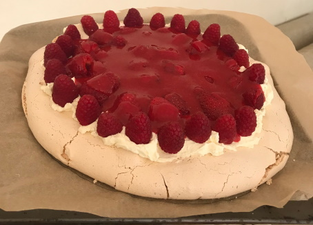
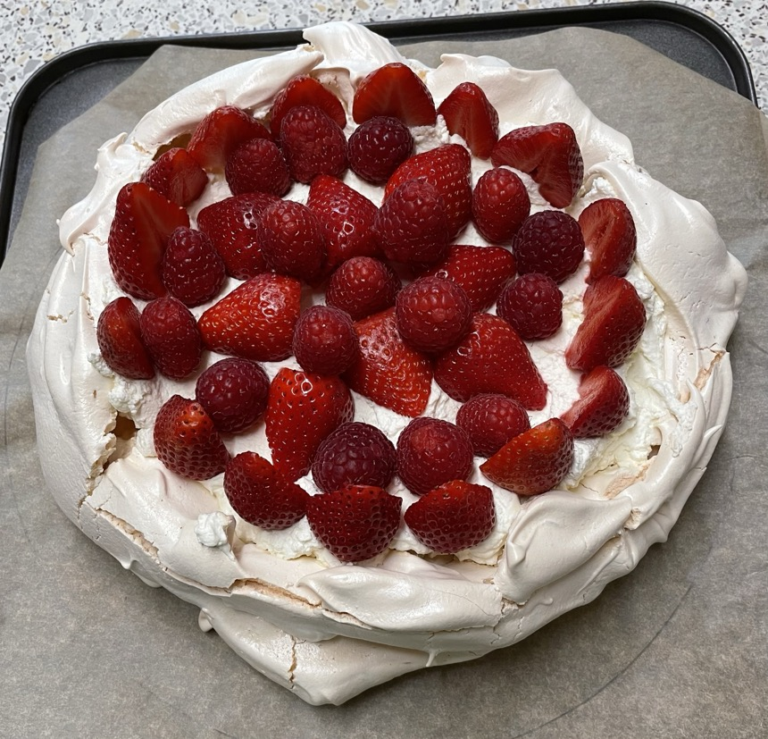

Strawberry Pavlova
- Heat oven to 150°C
- Mark out circle size of dinner plate (20cm) on baking paper
- Whisk on medium speed (4) until peaks forming
- 4 egg whites (room temperature)
- 1 tsp white wine vinegar
- 1 tsp vanilla extract
- Whisk on faster speed (6) and add in 1 tbsp at a time, 5 seconds between each
- 1 tsp cornflour
- 230g white caster sugar
- Whisk until soft peaks form and meringue is glossy
- Mound meringue in middle of circle and spread with sides little higher than middle
- Turn oven down to 140°C and bake for 1 hour
- Let meringue completely cool inside oven
Sauce
Pavlova
- Whip
- 300ml double cream
- 1 tbsp icing sugar
- Spread cream into middle of meringue
- Put onto cream
- 300g strawberries hulled and halved
- 100g raspberries
Notes
- Pour on coulee when serving
- Sugar reduced from 250g
- Strawberries reduced from 500g total
Pics

May 2022
